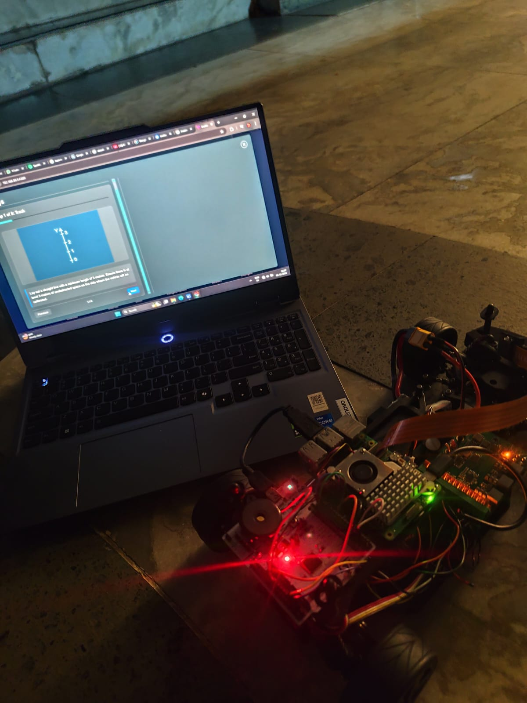

BFMC
BFMC is a 1:10 scale autonomous vehicle platform developed for the prestigious Bosch Future Mobility Challenge. The project involved engineering robust real-time lane tracking, obstacle detection, and trajectory planning capabilities onto constrained hardware.
Project Overview
The vehicle operates in a miniature smart-city environment that replicates real-world traffic conditions, including lane markings, intersections, traffic signs, traffic lights, pedestrians, and other vehicles. Using onboard sensors and computer vision techniques, the system continuously monitors its surroundings and makes driving decisions in real time to complete autonomous navigation tasks safely and efficiently.

Problem Statement
Autonomous vehicles must accurately perceive their environment, understand road infrastructure, and execute safe driving maneuvers without human intervention. Achieving reliable performance in dynamic urban scenarios requires the integration of perception, localization, path planning, and vehicle control systems within a resource-constrained embedded platform.
Proposed Solution
The system combines camera-based perception, advanced multi-lane tracking, traffic sign neural detection, and robust path-following controls. The stack interprets live streams in real time, executing safe steering maneuvers via tuned control feedback lines to adapt gracefully to shifting conditions.
Key Features
- Autonomous lane keeping and lane following
- Traffic sign and traffic light detection
- Intersection handling and route planning
- Obstacle and pedestrian awareness
- Real-time perception and decision making
- Autonomous navigation in urban driving scenarios
Technologies Used
- Raspberry Pi-based computing platform
- Computer Vision using OpenCV
- Python and Embedded Systems Programming
- Lane Detection and Path Planning Algorithms
- PID-Based Vehicle Control
- Autonomous Navigation and Decision Logic
Results & Achievements
Represented Dharmsinh Desai University in the challenge, deploying a comprehensive full-stack autonomous software suite. The system successfully validated full loop test closures including obstacle stops, lane compliance, and automated signal detection.